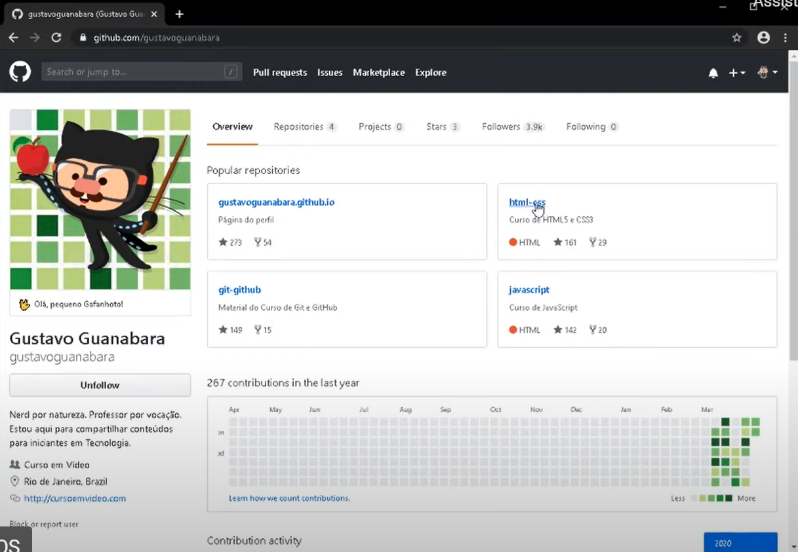
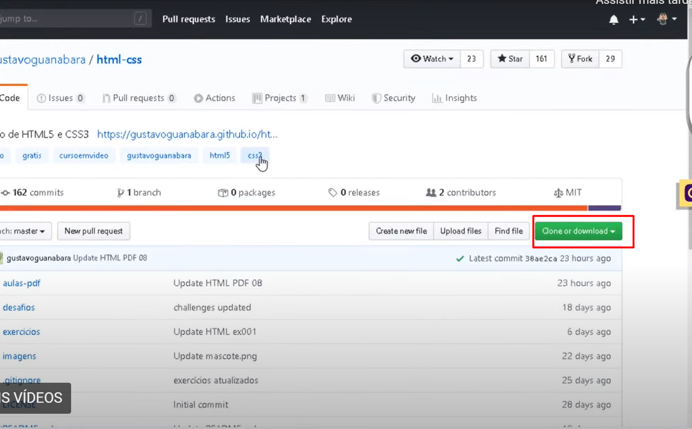
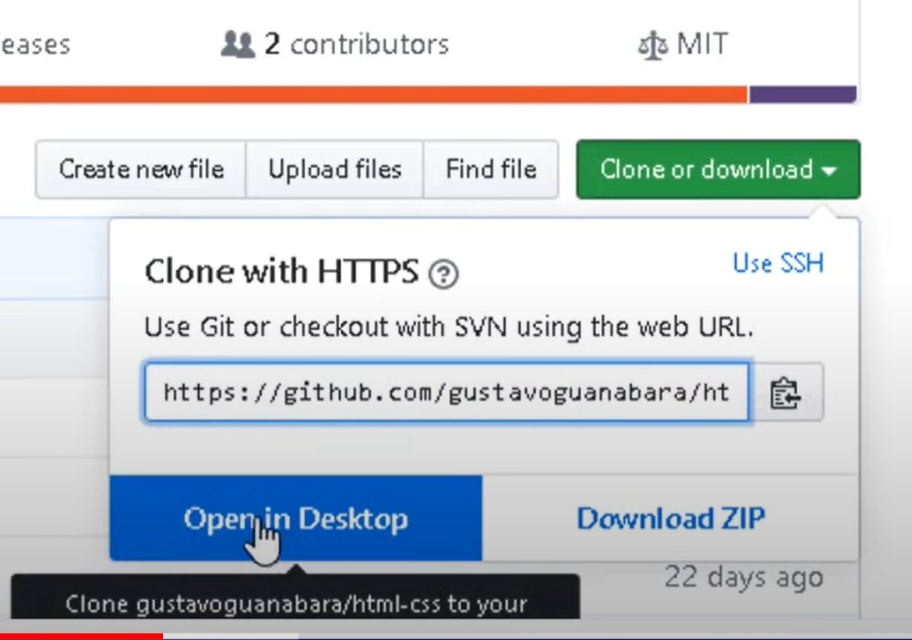
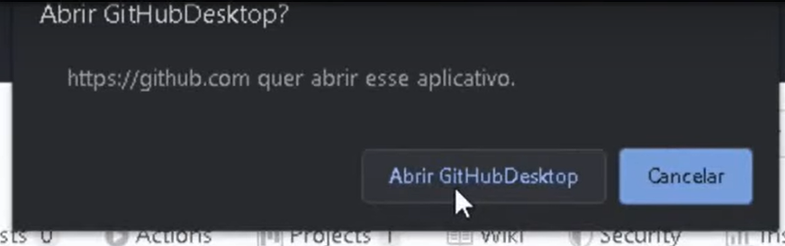
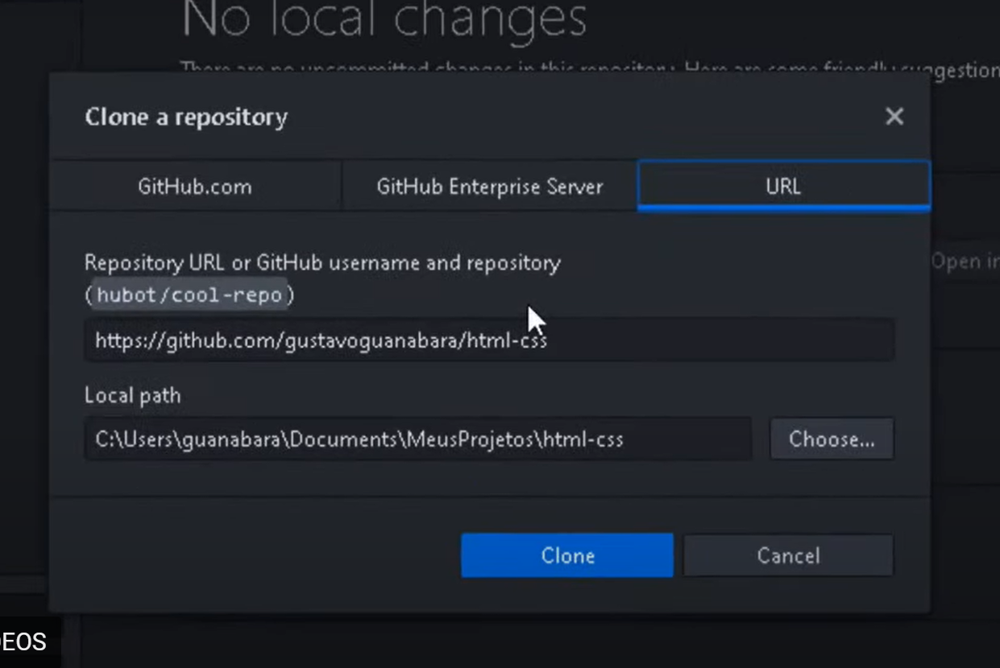

Como dito anteriormente, no GitHub é possivel armazenar seus códigos de forma privada e pública. Qualquer pessoa que disponibilizar um código de forma pública, estará autorizando o download deste código, ou seja, a clonagem do código, e é isso que vamos fazer agora.
Passo a passo

Primeiro vá até algum repositório público de algum usuário.

Depois clique em Clone ou Download.

Peça para abrir no GitHub Desktop.

Confirma a notificação de abrir o GitHub Desktop.

Confirma o nome e a pasta onde será clonado. Pronto, você acabou de clonar um repositório público.
O que fazer e não fazer com o clone
Não é possível alterar um clone e dar push pro original (obviamente)
Pode baixar e estudar ele
Pode sugerir alterações com Issues
Pode continuar editando por um novo caminho criando um Fork